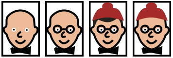

Ratkaisu
Alla on ratkaisu.
Voimme tarkistaa, että henkilöt täyttävät kaavion ehdot.
- Ensimmäisellä henkilöllä on rusetti ja myös silmälasit.
- Toisella henkilöllä on rusetti mutta ei ole silmälaseja.
- Kolmannella henkilöllä ei ole rusettia mutta on lakki.
- Neljännellä henkilöllä ei ole rusettia eikä myöskään lakkia.
Toinen mahdollisista ratkaisuista on:
Ylimpään ehto-soikioon täytyy asettaa silmälasit, koska se on ainoa ominaisuus, joka jakaa henkilöt kahteen kahden hengen ryhmään.
Vasemman haaran ehtoon täytyy asettaa hiukset, koska se on ainoa kyseiset kaksi henkilöä erottava ominaisuus.
Oikean haaran ehtoon voi laittaa joko lakin tai rusetin, koska henkilöt ilman silmälaseja voidaan erottaa kummallakin näistä ominaisuuksista. Kyseisten henkilöiden sijoituspaikat kaaviossa riippuvat siitä, kumpi ominaisuus valitaan. Esimerkkikuvassa valittiin lakki, mutta jos oltaisiinkin valittu rusetti, pitäisi kahden oikeanpuoleisimman henkilön paikat vaihtaa keskenään.
Eräs mahdollinen ratkaisu on:
Ylimmän ehdon täytyy jakaa henkilöt kahteen 4 hengen ryhmään. Tämä onnistuu asettamalla siihen jokin seuraavista ominaisuuksista: rusetti, silmälasit, hiukset tai suu.
Jos asettaisimme ylös suun, pitäisi meidän sen jälkeen pystyä jakamaan sekä neljä suun omaavaa että neljä suutonta henkilöä kahteen kahden hengen ryhmään. Suun omaavat voidaan jakaa kahtia lakin perusteella (vasen kuva alla).


Suuttomien osalta (oikea kuva yllä) huomataan, ettei mikään ominaisuus jaa heitä puoliksi kahteen kahden hengen ryhmään. Kolmella on lakki tai hiukset ja yhdellä on silmälasit tai nenä; ei löydy ominaisuutta, joka olisi heistä tasan kahdella.
Koska törmäsimme umpikujaan, voimma päätellä ettei ylimmän ehdon ominaisuudeksi voida asettaa suuta. Samaan tapaan kuin edellä, voimme myös havaita ettei myöskään rusetti tai silmälasit johda ratkaisuun: ylös on asetettava hiukset.
Kun hiukset on asetettu ylös, huomaamme suoraviivaisesti, että ainoa hiukset omaavat henkilöt puoliksi jakava ominaisuus on nenä, ja ainoa hiuksettomat henkilöt puoliksi jakava ominaisuus on lakki. Näin toisenkin tason ominaisuudet voidaan asettaa vain yhdellä tavalla. Tämän jälkeen kokonainen ratkaisu löydetään suoraviivaisesti (alimman tason ominaisuuksien valintaan on muutamia erilaisia ratkaisuun johtavia vaihtoehtoja).
Tämä on tietojenkäsittelyä!
Tehtävä havainnollistaa päätöspuita, joita käytetään tietojenkäsittelyssä esimerkiksi tekoälyn sovelluksissa. Päätöspuu luokittelee alkioita hierarkkisesti niiden ominaisuuksia koskevien ehtojen mukaan alaryhmiin, ja päätöspuun alimman tason alaryhmät vastaavat yleensä jotain johtopäätöksiä tms.
Tässä tehtävässä päätöspuun tavoitteena oli identifioida yksittäinen henkilö. Mutta myös esimerkiksi sovellus, joka auttaa lääkäriä diagnosoimaan potilaan mahdollisen sairauden, voisi perustua päätöspuuhun. Tällöin päätöspuun ehdot voisivat koskea esimerkiksi potilaiden testituloksia tai muita ominaisuuksia (onko korkea verenpaine, onko kuumetta, jne.), ja kukin alimman tason alaryhmä vastaisi diagnoosia potilaan tilasta.
Katso lisää esim. https://en.wikipedia.org/wiki/Decision_tree (englanniksi).